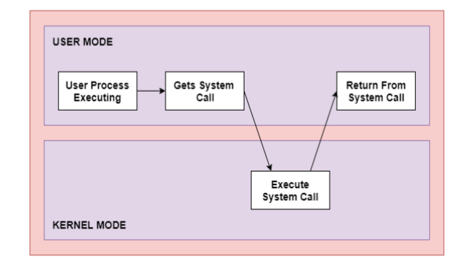

A system call is basically a way to call for services of the operating system. System calls are the interface between a process and an operating system. System calls are usually invoked when a process in user mode requires access to a resource. Then it requests the kernel to provide the resource via a system call.
Following figure shows the execution of the system call:
As shown in the diagram, the processes execute normally in the user mode until a system call interrupts it. Then the system call is executed on a priority basis in the kernel mode. After the execution of the system call, the control returns to the user mode and execution of user processes continues.
In general, system calls are required in the following situations:
When the computer system run user application like creating a text document or using any application program, then the system is in user mode. When the user application requests for a service from the operating system or an interrupt occurs or system call, then there there will be a transition from user to kernel mode to fulfill the requests.
When system boots then hardware starts in kernel mode and when operating system is loaded then it starts user application in user mode. To provide protection to the hardware, we have privileged instructions which execute only in kernel mode. If user attempt to run privileged instruction in user mode then it will treat instruction as illegal and traps to OS. Some of the privileged instructions are:
| Types of System Calls | Windows | Linux |
|---|---|---|
| Process Control | CreateProcess() ExitProcess() WaitForSingleObject() |
fork() exit() wait() |
| File Management | CreateFile() ReadFile() WriteFile() CloseHandle() |
open() |
| Device Management | SetConsoleMode() ReadConsole() WriteConsole() |
ioctl() read() write() |
| Information Maintenance | GetCurrentProcessID() SetTimer() Sleep() |
getpid() alarm() sleep() |
| Communication | CreatePipe() CreateFileMapping() MapViewOfFile() |
pipe() shmget() mmap() |
Process Control : Used for process creation, termination, execution etc. Ex.
File Management : Used to manage the file IO such as creating a file, reading a file, writing into a file, etc
Device Management : Responsible for device manipulation such as reading from device buffers, writing into device buffers, etc
Information Maintenance : These system calls handle information and its transfer between the OS and the user program.
Communication : They deal with creating and deleting a communication connection.
System calls are mostly accessed by programs via a high-level Application Program Interface (API) rather than direct system call use. Three most common APIs are Win32 API for Windows, POSIX API for POSIX-based systems (Linux, Mac OS X, etc), and Java API for the Java virtual machine (JVM).
The fork() system call is used to create processes. When a process (a program in execution) makes a fork() call, an exact copy of the process is created. Now there are two processes, one being the parent process and the other being the child process.
The process which called the fork() call is the parent process and the process which is created newly is called the child process. The child process will be exactly the same as the parent. Note that the process state of the parent i.e., the address space, variables, open files etc. is copied into the child process. This means that the parent and child processes have identical but physically different address spaces. The change of values in parent process doesn't affect the child and vice versa is true too.
Both processes start execution from the next line of code i.e., the line after the fork() call. Let's look at an example:
// example.c #includevoid main() { int val; val = fork(); // line A printf("%d", val); // line B }
When the above example code is executed, when line A is executed, a child process is created. Now both processes start execution from line B. To differentiate between the child process and the parent process, we need to look at the value returned by the fork() call.
The difference is that, in the parent process, fork() returns a value which represents the process ID of the child process. But in the child process, fork() returns the value 0.
This means that according to the above program, the output of parent process will be the process ID of the child process and the output of the child process will be 0.
The exec() system call is also used to create processes. But there is one big difference between fork() and exec() calls. The fork() call creates a new process while preserving the parent process. But, an exec() call replaces the address space, text segment, data segment etc. of the current process with the new process.
It means, after an exec() call, only the new process exists. The process which made the system call, wouldn't exist.
There are many flavors of exec() in UNIX, one being exec1() which is shown below as an example:
// example2.c #includevoid main() { execl("/bin/ls", "ls", 0); // line A printf("This text won't be printed unless an error occurs in exec()."); }
As shown above, the first parameter to the execl() function is the address of the program which needs to be executed, in this case, the address of the ls utility in UNIX. Then it is followed by the name of the program which is ls in this case and followed by optional arguments. Then the list should be terminated by a NULL pointer (0).
When the above example is executed, at line A, the ls program is called and executed and the current process is halted. Hence the printf() function is never called since the process has already been halted. The only exception to this is that, if the execl() function causes an error, then the printf() function is executed.